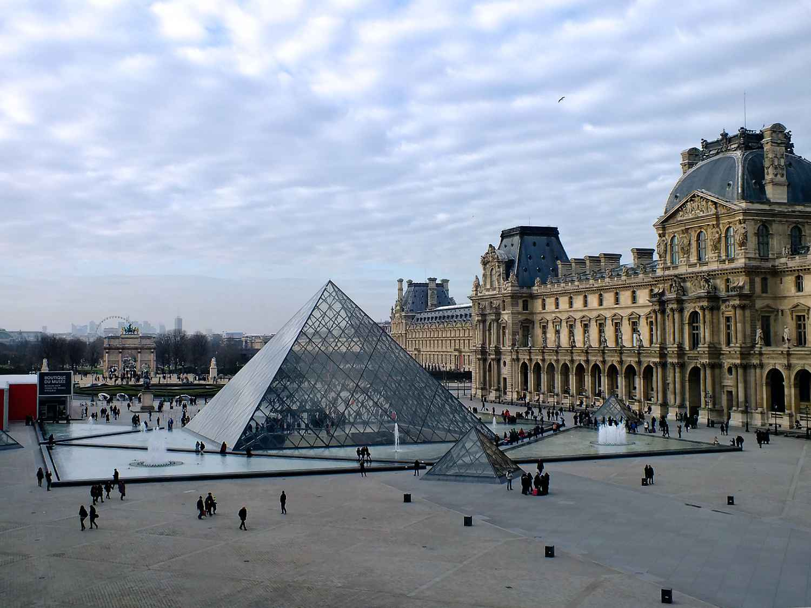

Visita París de forma gratuïta
La ciutat de París té una població d'uns 2,2 milions d'habitants, i és una de les principals destinacions turístiques del món. Amb el seu encant únic i la seva bellesa històrica, París atrau milions de visitants cada any, que gaudeixen de la seva arquitectura impressionant, la seva vibrant cultura i el seu ambient cosmopolita.
Aquí tens alguns consells per visitar París amb bicicleta:
Monuments i llocs emblemàtics gratuïts: París acull diversos monuments i llocs emblemàtics que podeu visitar de forma gratuïta. Aquests inclouen la Catedral de Notre-Dame (encara que actualment està en procés de restauració), la Basílica del Sagrat Cor a Montmartre, l'Arc de Triomf (l'entrada al monument té un cost, però podeu gaudir de la vista des de la plaça de forma gratuïta) i la Torre Eiffel (pots gaudir de la vista des de la base i els voltants sense haver de pujar a la torre).
Passeig per la riba del riu Sena: Gaudeix d´un agradable passeig gratuït al llarg de la riba del riu Sena. Podeu admirar els famosos ponts de París, com el Pont d'Alexandre III i el Pont de les Arts, i gaudir de la vista dels edificis històrics al llarg del riu.
Parcs i jardins: París compta amb nombrosos parcs i jardins bonics que són gratuïts. Alguns dels més populars són el Jardí de Luxemburg, el Parc Monceau i el Parc des Buttes-Chaumont. Aquests espais verds són ideals per relaxar-se, fer un pícnic o simplement passejar i gaudir de l'entorn.
Museus gratuïts: Si visites París el primer diumenge de cada mes, molts museus de renom, com el Museu del Louvre i el Museu d'Orsay, ofereixen entrada gratuïta. També hi ha museus que són gratuïts tot l'any, com el Petit Palais i el Museu Carnavalet, que et permeten gaudir de l'art i la història sense cap cost.
Esdeveniments i festivals gratuïts: París és coneguda per la seva animada vida cultural i molts esdeveniments i festivals es duen a terme de manera gratuïta. Podeu consultar els calendaris d'esdeveniments locals per descobrir concerts a l'aire lliure, espectacles de dansa, projeccions de pel·lícules i altres activitats gratuïtes que poden estar ocorrent durant la vostra visita.
Gaudeix del teu viatge low-cost per París!
